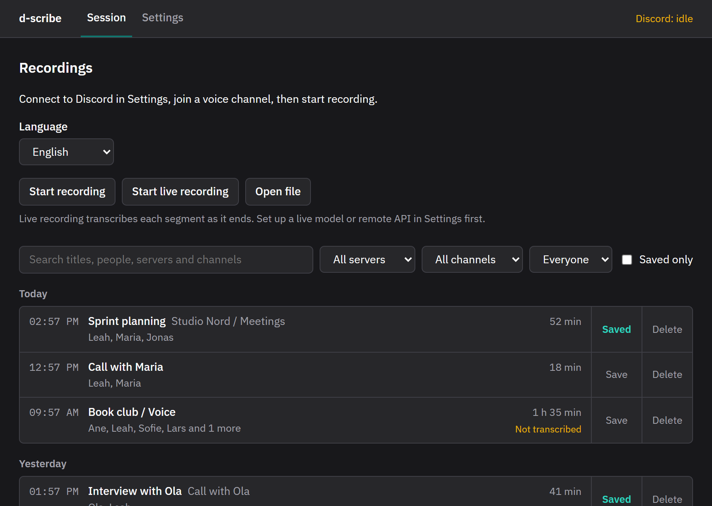
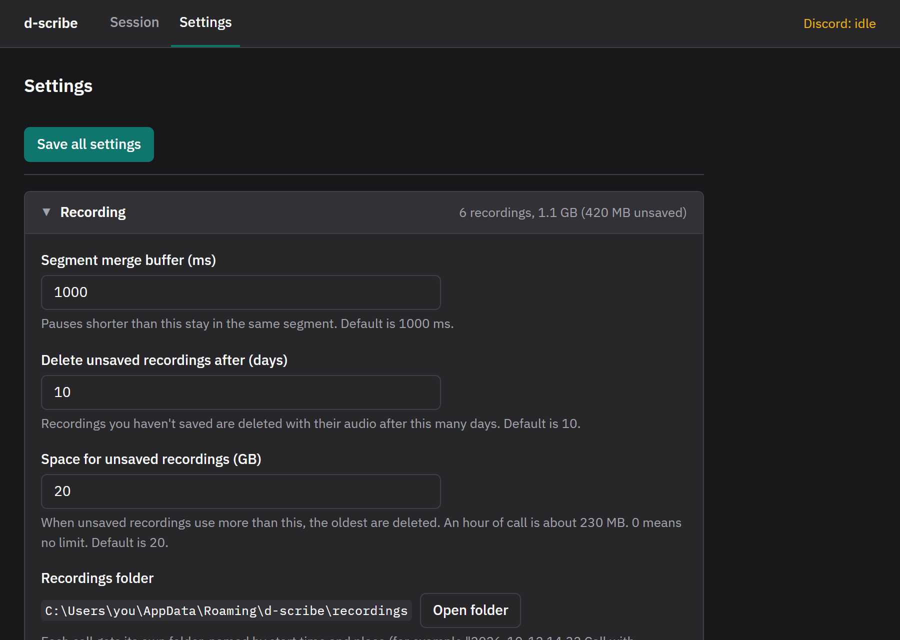

Notes from your Discord calls, with who said what
d-scribe records your Discord calls on your own PC and turns them into a transcript you can read, search and summarize. Good for meetings, interviews, study groups and anything you'd rather not take notes on while talking.
Windows may warn you when you open the installer.
The installer isn't signed with a paid certificate, so Windows SmartScreen can show "Windows protected your PC". Click More info, then Run anyway. The source code and the build that makes the installer are on GitHub.
Try it: open a call, press Play, click a line, fix the transcript under Edit, or transcribe the call with Sam. Made-up calls; Sprint planning has sound.
What it does
Knows who is talking
Discord tells d-scribe who speaks when, so every line has a name, not "Speaker 2".
Transcribes on your PC
Uses Whisper on your own computer, much faster with an NVIDIA graphics card. Calls that switch between Norwegian and English work too.
Read, fix and search
Click a line to hear it. Fix words and speakers, search a call, and export subtitles.
Summaries with your AI
Send a transcript to the AI tool you already use, for a summary, action points or your own prompt.
Records by itself
Optional: d-scribe sits in the tray and starts recording when you join a call with others, and stops when you leave.
Your files, in plain folders
Each call is a folder with the audio and a transcript file. Unsaved calls are cleaned up after a while, saved ones are kept.


Get started
-
Get access to Discord voice info.
Discord only shares who is speaking with apps that have added you as a tester. Request access below, and you'll get an invite in Discord. You can also use your own Discord app, which takes a few minutes and needs no approval.
-
Install d-scribe.
Download the installer and run it. It updates itself after that.
-
Connect Discord and pick a language.
In Settings, click Connect and approve in Discord. Then download a model for your language. The app fetches the transcription engine the first time you transcribe.
-
Join a call and record.
Click Start recording, or turn on automatic recording. When the call ends, click Transcribe.
Requirements
- Windows 10 or 11, and the Discord desktop app
- An NVIDIA graphics card is recommended. Without one, transcribing works but takes much longer with the most accurate models.
- About 3 GB of disk for a large model, and about 230 MB per hour of recording
Let the people in the call know that you record. It's polite, and in some places it's required.
Request test access
Discord limits how many testers an app can have, so access is given by hand. You'll get an invite to the d-scribe app in Discord when you're added.
The form needs a Google sign-in. If it doesn't load here, open the form in a new tab.